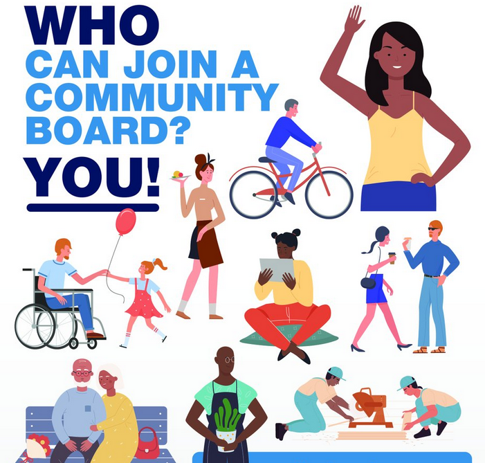

Welcome to Highland Park - Your Local Community Board
Home
The Highland Park Community Board is a dedicated group of residents working together to enhance the quality of life in our vibrant neighborhood. Established in 1971, our board serves as a platform for community members to voice their opinions, share ideas, and collaborate on various initiatives.
Our mission is to foster a strong sense of community, promote civic engagement, and ensure that the voices of all residents are heard. We believe that every resident has something valuable to contribute, and we strive to create an inclusive environment where everyone feels welcome.
Throughout the year, we organize a variety of events and programs aimed at bringing residents together. These include:
- Community Clean-Up Days: Join us in keeping our neighborhood clean and beautiful.
- Neighborhood Festivals: Celebrate our local culture and connect with neighbors at our annual festivals.
- Workshops and Educational Programs: Participate in workshops on topics like gardening, budgeting, and health.
- Monthly Meetings: Attend our meetings to stay informed about local issues and contribute to discussions about community development.
We also collaborate with local organizations, schools, and businesses to enhance community resources and opportunities. Together, we can make a positive impact and create a thriving environment for all residents.
Whether you're a long-time resident or new to Highland Park, we invite you to get involved. Your participation is essential in shaping the future of our community!
Upcoming Events
-
November 20, 2024
Community Clean-Up Day
Join us for a day of community service as we clean up our neighborhood. Supplies will be provided!
-
Every Saturday
Farmers Market
Shop for fresh produce, local crafts, and more at our weekly farmers market from 9 AM to 2 PM.
-
December 10, 2024
Annual Highland Park Fair
Come and enjoy rides, games, and local food vendors at our annual fair! Fun for the whole family!
Local Resources
| Resource | Contact |
|---|---|
| Community Center | (949) 123-4567 |
| Public Library | (949) 234-5678 |
| Local School | (949) 345-6789 |
Working Together

The Highland Park Community Board is dedicated to fostering a sense of unity and cooperation among residents. We organize various events and initiatives that encourage community involvement, from neighborhood clean-up days to local festivals.
Everyone is welcome to participate! Whether you're interested in volunteering, sharing your ideas, or just learning more about our community, there are many ways to get involved:
- Join us for our monthly meetings to discuss community issues and projects.
- Participate in local events and help make them successful.
- Become a member of the Highland Park Community Board to stay informed and influence local decisions.
Let’s work together to make Highland Park a better place for everyone!